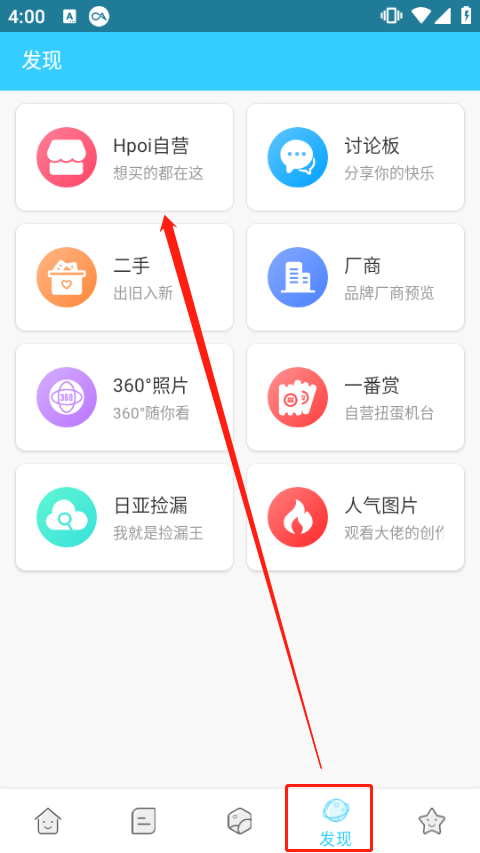

Hpoi 手办维基版本进化史：从工具到社区的七年爬坡
从 2017 年备案到如今的 2.38 版本，Hpoi 走过了一条少见的"先建库再做社区最后接电商"的路线。本文以版本号为时间轴，梳理它的关键转向、团队在死磕什么，以及下一步会往哪走。
现在打开 Hpoi官网，发现页的布局会让新用户有点眼花——自营店、日亚捡漏、二手区、讨论板、相册入口挤在同一个页面，像一个什么都想做的模玩百宝箱。但如果你翻一下版本历史就会发现，这个"什么都有"的状态不是一开始就这样堆出来的，它是七年迭代一路叠上去的结果。
我手头能看到的最早痕迹是备案信息——粤 ICP 备 17032623 号-3A，对应的应该是 2017 年前后的立项。拿到手先从官方下载渠道核对一下包名和开发者署名，避免被山寨包坑。那时候的 Hpoi 是什么样，样本文档没提，官方也很少公开早期 changelog。但从 2018 年到现在的版本节奏里，大概能拼出它的成长路线。
来路：先建库，再找人
Hpoi 的起点很朴素——手办圈缺一个像样的资料库。那时候查一款手办的版本、比例、定价，要么翻 Wiki 条目要么蹲贴吧老帖，信息散且容易过时。Hpoi 先从这件事切入：做一个条目式的产品数据库，每条模型有自己的页面，标注厂牌、发售日期、参考定价、实物图。
这条线至今没变。样本文档里提到的"月度共享编辑榜单"、"招募编辑参与模型条目录入与图片处理"，说明资料库一直靠用户共建在滚动。我关注 Hpoi 那几年，印象里最勤的更新不是商城上架，而是条目页突然多了几张高清实物图，或者某个老款的参考定价被新玩家补上了。资料库是它的地基，这块一直在补砖，从来没停过。
但只做资料库有个问题：你把东西做出来了，得有人过来用。于是它开始加社区功能。
版本 2.38.0（这是样本文档里唯一明确提到的版本号）有一条记录是"优化了讨论板的显示"。讨论板的定位在发现页的入口写得很直白——"分享你的快乐"。它和资料库不同，资料库是查资料的工具，讨论板是纯聊天的地方：开箱感受、入坑故事、求助提问、闲置讨论。不强制关联具体条目或图片，自由度很高。
从版本迭代的描述看，讨论板不是一次成型的。"优化了显示"这种措辞通常意味着这个板块已经上线一段时间了，但团队还在调它的可用性。这是 Hpoi 的一个典型做法：功能先上，然后默默打磨细节，很少搞大张旗鼓的版本发布会。
转向：从"查"到"晒"到"买"
如果说资料库解决了"查"的问题，讨论板解决了"聊"的问题，那社区相册解决的就是"晒"的问题——手办圈天然有展示欲，买来不晒等于白买。相册功能让玩家可以把实发图、开箱图、场景图上传，关联到对应的模型条目上。这反过来又补全了资料库的实物图片缺口，形成了"玩家晒图 → 条目页更丰富 → 更多人来查"的循环。
真正让 Hpoi 和其他手办资料库拉开差距的，是它开始做交易相关的功能。
自营店先上——正版预定与现货，一站式下单。然后是日亚捡漏入口，官方描述是"我就是捡漏王"，定位清晰：聚合日本亚马逊上的降价、清仓、补货机会，帮国内玩家省去自己天天刷日亚的功夫。再然后是二手区，有专门的交易沟通机制和安全约定。
这条"查 → 晒 → 买"的路线走得挺有意思。很多同类平台是反过来的——先做交易抓流量，再补内容。Hpoi 用了差不多三四年先把资料库和社区做扎实，再接电商模块，结果就是它的交易有自己的特色：日亚捡漏和二手区都带着资料库的属性，你在日亚淘到一款老款手办，可以先回来查条目确认版本和官方定价，再决定是不是真的捡着漏了。这是单纯的电商平台做不到的。

规律：团队在死磕什么
把能看到的版本变更串起来，有几个规律挺明显的。
第一，社区规则一直在加严。 站规、积分规则、用户协议都在Hpoi文档长期公示，评论规范和封禁申诉机制有明确条款，甚至有"自助解封"这种细节。App Store 评论区能看到玩家抱怨发帖被禁言的经历——这说明规则不是摆设。从版本角度看，这块是"越写越长"的状态，不是一次写完就不管了，而是社区每次出点什么事就补一条。这不是坏事，说明团队在认真对待社区生态。
第二，资料共建的激励一直在做。 月度共享编辑榜单、编辑招募、条目录入——这套体系从 2018 年到现在一直在运营。没有见它停过，也没见它换过方向。资料库仍然是 Hpoi 最核心的资产，这块团队是死磕到底的。
第三，电商功能做了但不激进。 自营店、日亚捡漏、二手区都在，但从没见过它搞大规模促销或者导流广告。日亚捡漏甚至明确说了"新手建议先走自营店和淘宝下单这类省心渠道"——不硬拉人用它的功能，这点挺克制。
什么一直不管？首页的信息密度。 发现页挤了太多入口，新用户打开容易懵，但这件事好像一直在那放着没动过。可能团队觉得功能优先，体验可以放一放？也可能它的目标用户是老玩家，老玩家不需要引导。
线下的那一步
样本文档里有个细节——平台近年参与模玩展会活动，设置摄影展墙等环节，把线上社区内容搬到线下。这个动作说明 Hpoi 不满足于只做一个 App 里的社区，它想在线下也有存在感。对于手办圈这种"小众但线下聚会密度高"的领域，线下展会的参与是很有价值的品牌露出。
预判：从迭代规律推的
按现在这个节奏往下走，我猜它的下一步大概率是继续加深资料共建和社区生态的绑定——比如让社区里的优质内容自动沉淀到资料库，或者让新用户通过社区互动自然发现资料库的价值。电商模块应该继续保持现在的克制状态，不会突然变成主打。
但有一件事值得留意：备案信息是 2017 年的，到现在已经快十年了，Hpoi 的开发者深圳海牛信息科技有限公司的公开活动不多，App Store 开发者署名和备案信息一直维持原样，安卓包名是 net.hpoi。这种"低调运营"的状态能持续多久，取决于它的用户基数能不能支撑。如果哪天发现"查资料"的用户增长慢了，"晒图"和"交易"的用户还在涨，那它可能会调整重心。
毕竟，一个产品活了七年，本身就是一种持续迭代的结果。每一条不起眼的小更新、每一次规则的补充、每一个入口的调整，都是在给这座楼添砖加瓦。Hpoi 现在的样子，是它选择先建库、再做社区、最后接电商这条路线的必然结果。走到今天，它最大的底气还是那个还在持续更新的资料库。这套整理好的资料库文档为了国内不同网络环境都能顺畅访问，同时同步在GitHub、Gitee、GitCode三个仓库里镜像维护。